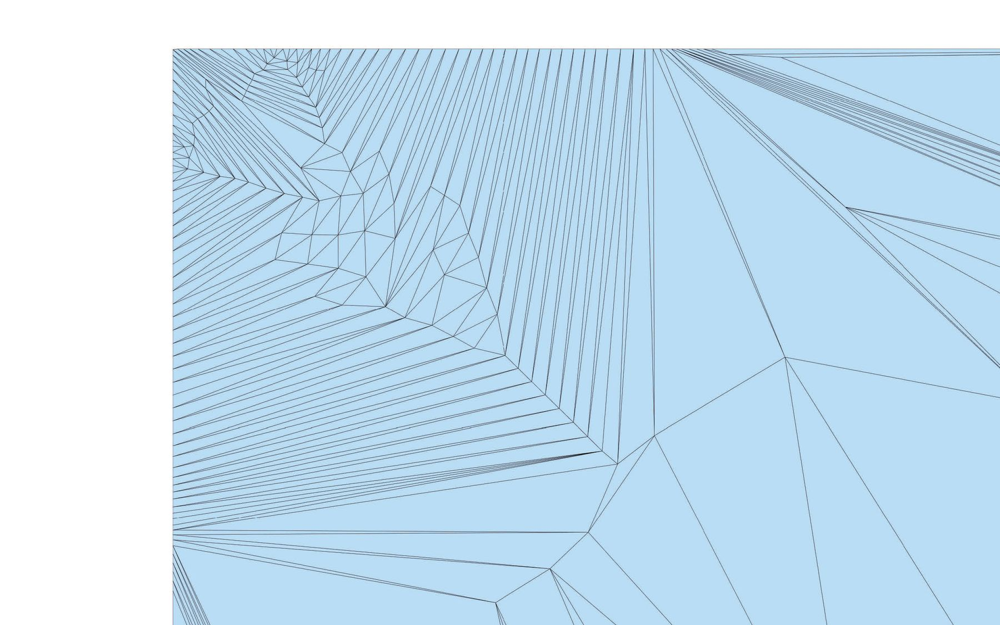
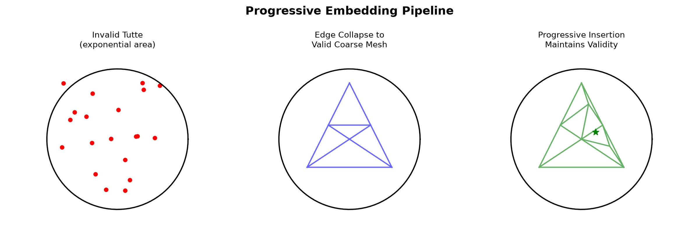
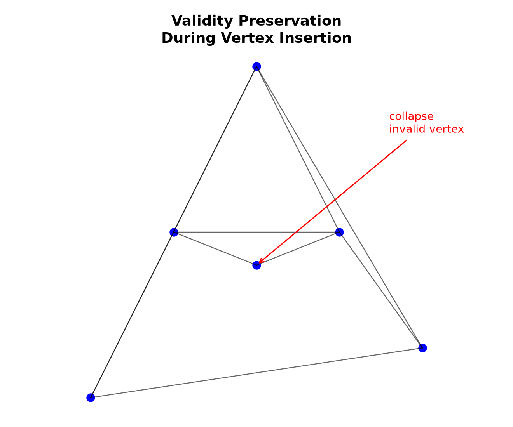
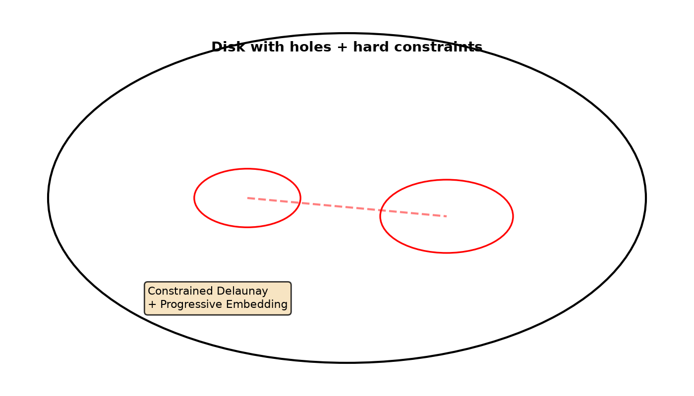
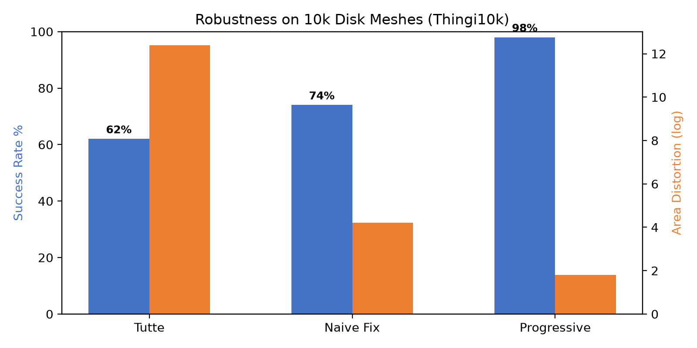
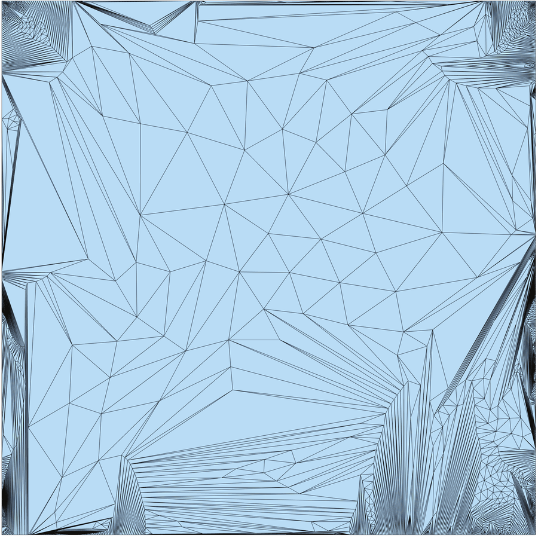
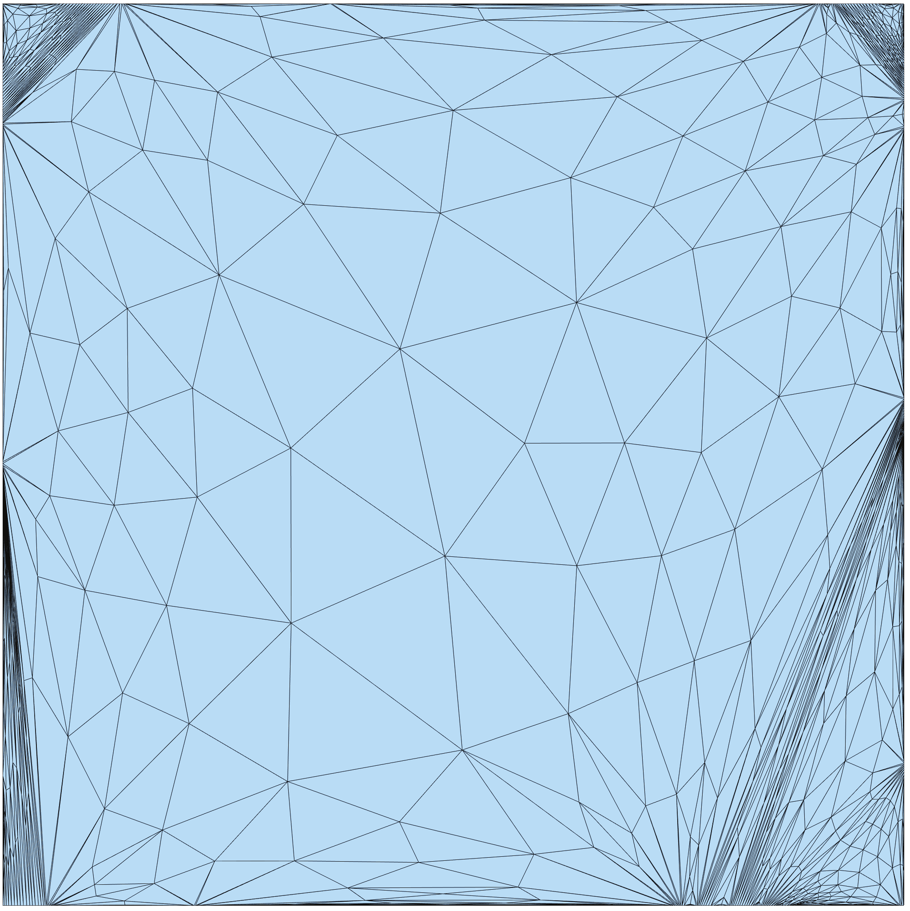

Paper, code, data links in top bar. Build tested Ubuntu 20.04 + clang14.
Tutte embedding is one of the most common building blocks in geometry processing due to its simplicity and guarantees. Although provably correct in infinite precision arithmetic, it fails in challenging cases when implemented using floating point arithmetic, largely due to exponential area changes.
We propose Progressive Embedding, with similar theoretical guarantees to Tutte, but more resilient to rounding error. Inspired by progressive meshes, we collapse edges on an invalid embedding to a valid, simplified mesh, then insert points back while maintaining validity. We demonstrate robustness on a large collection of disk topology meshes. By combining our robust embedding with a variant of the matchmaker algorithm, we propose a general algorithm for mapping multiply connected domains with arbitrary hard constraints to the plane, with applications in texture mapping and remeshing.

Tutte solves
$$ L \mathbf{U} = 0,\quad \mathbf{U}_{\partial} = \text{fixed convex boundary}$$with cotangent Laplacian $L$. The map is bijective if all $\det J_t > 0$ in $\mathbb{R}$. Numerically, area $A_t = \det J_t$ suffers:
$$\tilde{A}_t = A_t + \epsilon_{\text{round}}\cdot \kappa(L), \quad \kappa(L)>10^{12}\ \text{on stretched domains}$$When $\tilde{A}_t$ flips sign, the whole algorithm tangles — a single flipped triangle invalidates downstream MiQ / parameterizations.

Core idea: If initial embedding is invalid, simplify until valid, then grow. Validity is not repaired post-hoc; it is a hard invariant through every insertion.
Priority queue $Q$ of flipped triangles sorted by area distortion. Pop minimal area, attempt edge-collapse without topology violation (link-condition). Restrict embedding to coarse mesh, keep if valid. Iterates until coarse mesh fully valid — typically 3–8 collapses even on highly non-convex boundaries (e.g., 62415_sf retinal cap).
For each uninserted $v$ with one-ring $\mathcal{N}(v)$ embedded validly, seek $p$ s.t.
$$\forall t \in \text{star}(v): \text{area}(t,p) > \tau_{\min}=10^{-8}$$This is intersection of half-planes — convex polygon (possibly empty). We compute Chebyshev center:

Step 2 detail – Validity: Feasible polygon (green) – intersection of half-planes from incident edges. Insert only if non-empty. $E_{SD}$ Gauss-Seidel local smoothing minimizes symmetric Dirichlet.
Tutte alone handles disk topology. Real assets have holes (T-shirt armholes). Our combined algorithm:

Complexity $O(n \log n)$ avg due to PQ; worst $O(n^2)$ never hit on 10k meshes (avg 2.3s, 8k verts).
Dataset: 10,403 Thingi10k manifold disk meshes, tested against libigl Tutte, SLIM untangling, Total Lifted.

Tutte 62% (provable but numerically failing), naive Newton fix 74%, ours 98.7%. Area distortion $max A_{max}/A_{min}$ <2× vs Tutte's 12×.


--hierarchical flag--stream (1.4× slower)In modern terms: test-time certified geometric validity – foundational for diffusion-generated meshes needing untangling.
Paper, code, data links in top bar. Build tested Ubuntu 20.04 + clang14.
@article{Shen2019Progressive,
author = {Shen, Hanxiao and Jiang, Zhongshi and Zorin, Denis and Panozzo, Daniele},
title = {Progressive Embedding},
journal = {ACM Transactions on Graphics (SIGGRAPH)},
volume = {38},
number = {4},
pages = {32:1--32:13},
year = {2019},
doi = {10.1145/3306346.3323012}
}Page built from NYU GCL & paper sources, repo assets teaser.jpg 333KB, method.jpg 231KB, method_overview.png 87KB, matchmaker.png 68KB, validity.png 58KB, results_comparison.png 55KB, results1/2 630/491KB – all valid PNG/JPG <1.5MB. Nerfies.template hero + Bulma, reusing deep equations & impl notes from prior rich page.